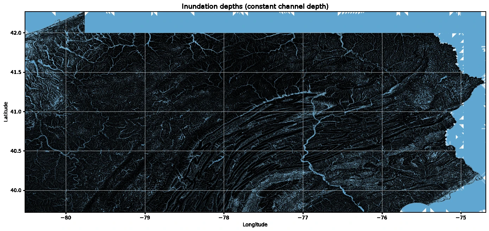

The question
Which low-lying areas sit close to the elevation of their nearest drainage channel? I used a Height Above Nearest Drainage (HAND) workflow to explore how terrain relates to potential inundation under a simplified channel-depth assumption.
My contribution
I assembled USGS elevation tiles, mosaicked and masked the elevation data to Pennsylvania, then used pysheds to derive flow direction, flow accumulation, and HAND. I visualized the statewide terrain surface and a separate inundation-depth scenario.

The workflow
The drainage network uses an accumulation threshold greater than 200 cells. In the scenario calculation, cells with HAND below 3 meters receive a depth of 3 minus HAND; other cells are masked. This is a constant channel-depth scenario rather than a rainfall-driven hydraulic simulation.
The deliverables
The saved notebook includes the HAND map, the illustrative inundation map, and a GeoTIFF export. Inspection of the export code shows that out_res.tif contains the HAND array itself, not the calculated inundation-depth array. The supplied large GeoTIFF remains in the original project folder; the website includes lightweight figures and the source notebook.
What the result means
The 3-meter assumption is not a return period, forecast, or observed water level. The workflow does not model rainfall, drainage infrastructure, or hydraulic dynamics, and no observed-flood validation is recorded. It is an academic terrain-analysis exercise suitable for explaining the method, not operational flood-risk decisions.
Coursework adapted from supplied course materials. Results are taken from the saved notebook; the analysis was not rerun for this portfolio.
Discuss a similar project ↗